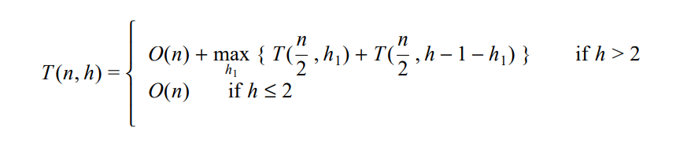

Algorithm Description
The Kirk Patrick Seidel algorithm is a divide-and-conquer algorithm for finding the convex hull of a set of points in the plane. It works by dividing the points into two subsets based on their x-coordinates, finding the convex hulls of the two subsets recursively, and then merging the hulls to form the final convex hull.
Pseudocode
Define class Point with properties x and y
Constructor initializes x and y
Define function ConvexHull with parameters points and n
Initialize an empty list convexHull
Identify extreme points (plmin, pumin, pumax, plmax) among points
For each point in points
Update extreme points based on x and y comparisons
Calculate upper tangent points using getUpperT with pumin and pumax
Calculate lower tangent points using getLowerT with plmin and plmax
Construct upper hull with upperHull using pumin, pumax, and upper tangent points
Construct lower hull with lowerHull using plmin, plmax, and lower tangent points
Combine upper and lower hulls into convexHull
Sort convexHull points in clockwise order
Remove duplicate points from convexHull
Return convexHull
Define function computeSlope with parameters a and b
Calculate and return slope between points a and b
Define function comparePoints with parameters a and b
Compare two points based on their x and y values
Define function abss with parameter a
Return absolute value of a
Define function getPivotValue with parameters arr, low, and high
If segment length ≤ 5, find median directly from sorted segment
Else, recursively calculate median of medians for partitioning
Define function partition with parameters arr, low, and high
Partition arr around a pivot value, return partition index
Define function findMedianUtil with parameters arr, k, low, and high
Find median of arr using partition-based selection
Define function findMedian with parameter arr
Return median value of arr
Define function getUpperT with parameters pumin, pumax, and points
Determine points forming the upper tangent to the convex hull
Define function getLowerT with parameters plmin, plmax, and points
Determine points forming the lower tangent to the convex hull
Define function upperHull with parameters pmin, pmax, and upperT
Construct and return points forming the upper hull
Define function lowerHull with parameters pmin, pmax, and lowerT
Construct and return points forming the lower hull
Define function sortPointsClockwise with parameter points
Sort points in clockwise order around their centroid
Define function findCentroid with parameter points
Calculate and return the centroid of a set of points
Define function calculateAngle with parameters centroid and point
Calculate and return the angle of a point with respect to centroid
Define function removeDuplicatePoints with parameter hull
Remove duplicate points from hull and return unique points
ConvexHull(points, n)
Arguments: points (Array of Point), n (Number)
Returns: Array of Point
computeSlope(a, b)
Arguments: a (Point), b (Point)
Returns: Number (Slope)
Time Complexity: O(1)
comparePoints(a, b)
Arguments: a (Point), b (Point)
Returns: Boolean
Time Complexity: O(1)
abss(a)
Arguments: a (Number)
Returns: Number (Absolute value)
Time Complexity: O(1)
getPivotValue(arr, low, high)
Arguments: arr (Array of Numbers), low (Number), high (Number)
Returns: Number (Median value)
Time Complexity: O(n)
partition(arr, low, high)
Arguments: arr (Array of Numbers), low (Number), high (Number)
Returns: Number (Partition index)
Time Complexity: O(n)
findMedianUtil(arr, k, low, high)
Arguments: arr (Array of Numbers), k (Number), low (Number), high (Number)
Returns: Number (Median value)
Time Complexity: O(n)
findMedian(arr)
Arguments: arr (Array of Numbers)
Returns: Number (Median value)
getUpperT(pumin, pumax, points)
Arguments: pumin (Point), pumax (Point), points (Array of Point)
Returns: Array of Point
Time Complexity: O(n)
getLowerT(plmin, plmax, points)
Arguments: plmin (Point), plmax (Point), points (Array of Point)
Returns: Array of Point
Time Complexity: O(n)
upperHull(pmin, pmax, upperT)
Arguments: pmin (Point), pmax (Point), upperT (Array of Point)
Returns: Array of Point
Time Complexity: O(n log n)
lowerHull(pmin, pmax, lowerT)
Arguments: pmin (Point), pmax (Point), lowerT (Array of Point)
Returns: Array of Point
Time Complexity: O(n log n)
sortPointsClockwise(points)
Arguments: Array of Point
Returns: Nothing, modifies points array
Time Complexity: O(n log n)
findCentroid(points)
Arguments: Array of Point
Returns: Point (the centroid)
Time Complexity: O(n)
calculateAngle(centroid, point)
Arguments: 2 point objects
Returns: Number(the angle in radians wrt positive x axis) (the centroid)
Time Complexity: O(1)
removeDuplicatePoints(hull)
Arguments: Array of Point
Returns: Array of Point
Time Complexity: O(n)
Time and Space Complexity
The time complexity of the Kirk Patrick Seidel algorithm is O(n log n), where n is the number of points. This is because the algorithm sorts the points and then performs a divide-and-conquer approach, which has a time complexity of O(n log n).
The space complexity of the algorithm is O(n), as it requires additional space to store the points on the upper and lower hulls, as well as the final convex hull.
As I increase the dots...
| Number of Points | Time Complexity | Comments |
|---|---|---|
| 10 | O(n log n) | Sorting dominates, recursion and median doesn't contribute much |
| 100 | O(n log n) | Sorting dominates, recursive partitioning and median selection also scale linearly with the number of points. |
| 1,000 | O(n log n) | Sorting dominates, recursive partitioning and median selection may lead to slightly increased overhead |
| 10,000 | O(n log n) | Sorting dominates, recursive partitioning and median selection may become more significant, potentially leading to a slight increase in overall time complexity. |
| 100,000 and beyond | O(n log n) | Sorting dominates, slight increase in overhead for large datasets. |
Worst-case time complexity Recurrence Relation
Advantages and Disadvantages
Advantages
- More efficient than the Jarvis March algorithm for larger datasets, with a time complexity of O(n log n).
- Works well for both clustered and non-clustered data.
- Can be parallelized to further improve performance.
Disadvantages
- More complex to understand and implement compared to the Jarvis March algorithm.
- Requires sorting the input points, which can take additional time and space.
- Less efficient for small datasets, where the overhead of sorting and divide-and-conquer approach may outweigh the benefits.